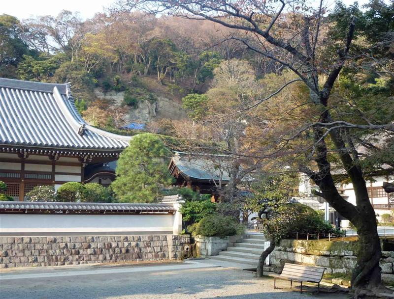

Sejarah
Pada tahun 1937, Jepang membuka perang dengan Republik Cina saat bergabung Perang Dunia ke-2 ,berdasarkan pada Pakta Tripartit diakhiri dengan Jerman dan Italia. Pada tahun 1941, Jepang menuju ke pertempuran Perang Pasifik. Namun dengan 1945, bom atom dijatuhkan ke kedua Hiroshima dan Nagasaki dan Jepang terpaksa menyerah.
Setelah kekalahan perang, Jepang diundangkan Konstitusi Jepang didirikan untuk Jepang, dan didasarkan pada kedaulatan rakyat dan pasifisme. Dalam era berikutnya pertumbuhan tinggi membuat Jepang sebagai ekonomi terbesar kedua di dunia dan ekonominya jauh lebih baik. Pada tanggal 20-an, bagaimanapun, Jepang menderita dari ledakan perekonomian mereka, yang menyebabkan tidak berkembangnya yang berkepanjangan. Hanya saja baru-baru ini perekonomian telah menunjukkan tanda-tanda pemulihan.
Dalam beberapa tahun terakhir, beberapa bencana alam dan kecelakaan, seperti Hanshin Gempa Besar, yang Serangan gas sarin di kereta bawah tanah Tokyo, Gempa Besar mengguncang daerah Jepang Timur, dan kecelakaan PLTN bencana nuklir Fukushima Daaichi, penderitaan rakyat Jepang dan rasa kebutuhan serta keperluan untuk berkembang dengan manajemen lebuih maju diantara orang-orang sekitar.
Geografis
Negara Jepang merupakan negara kepulauan yang terletak di timur laut pantai Asia. Jepang sendiri terletak di Samudera Pasifik Utara. Laut Jepang memisahkan Negara Jepang dengan Benua Asia yang merupakan benua terbesar di dunia. Sama halnya seperti Indonesia, Jepang juga memiliki ribuan pulau-pulau kecil. Namun, dari ribuan pulau yang dimiliki hanya 4 (empat) pulau besar yang banyak dikenal masyarakat luas, yakni Honshu, Hokkaido, Kyushu, dan Shikoku.
Seacara astronomis Jepang terletak di antara 30°LU-47°LU dan 128°BT-146°BT. Sedangkan secara geografis, Negara Jepang terletak di Asia Timur yang terpisah dari benua Asia atau terletak di sebelah timur benua Asia dan sebelah barat Samudera Pasifik.
Di sebelah utara, Jepang berbatasan dengan Laut Okhstosk, di sebelah timur berbatasan dengan Samudra Pasifik. Batas sebelah selatannya yaitu Laut Cina Timur dan Laut Filiphina. Sedangkan di bagian barat, Jepang berbatasan dengan Laut Jepang dan Selat Korea.
Wisata
Jika berencana berkunjung ke Jepang, ada banyak tempat menarik untuk dikunjungi. Negara yang merupakan tempat di mana teknologi dan tradisi kuno berpadu secara indah dan harmonis ini memiliki keunikan dan daya tarik tersendiri. Tapi tempat wisata mana saja yang wajib dikunjungi di Jepang? Inilah Tempat Wisata Unik dan Indah di Jepang.
Ueno Park

Jepang terkenal dengan bunga sakuranya yang sangat indah. Bila Anda ingin menikmati kecantikan bunga ini, datanglah ke Ueno Park pada saat musim semi yang terjadi sekitar bulan Maret hingga Mei. Ueno Park memang tempat yang paling terkenal dan telah menjadi lokasi wisata Jepang yang paling diminati untuk melakukan hanami, yaitu piknik sambil menikmati mekarnya bunga sakura.
Beppu
Beppu suatu tempat yang ideal untuk liburan di akhir minggu. Kota ini didirikan pada tanggal 1 April 1924 dan terkenal dengan ribuan onsen (air panas), yang dianggap suci. Beppu sumber permandian air hangat utama di Jepang, mengandung sembilan onsen utama, yang kadang-kadang disebut sebagai "sembilan neraka dari Beppu". Beppu termasuk kota wisata di Jepang karena keindahannya. Beppu terletak di antara laut dan pegunungan.
Kamakura Kanagawa

Kamakura adalah sebuah kota yang terletak di Kanagawa, Jepang, sekitar 50 km barat daya Tokyo. Dikelilingi oleh pegunungan di tiga sisi dan air di Sagami Bay. Kamakura juga memiliki pantai yang dekat dengan kuil dan kota Tokyo, membuatnya menjadi tujuan wisata populer. Kota ini dilengkapi dengan restoran dan fasilitas wisata yang baik.